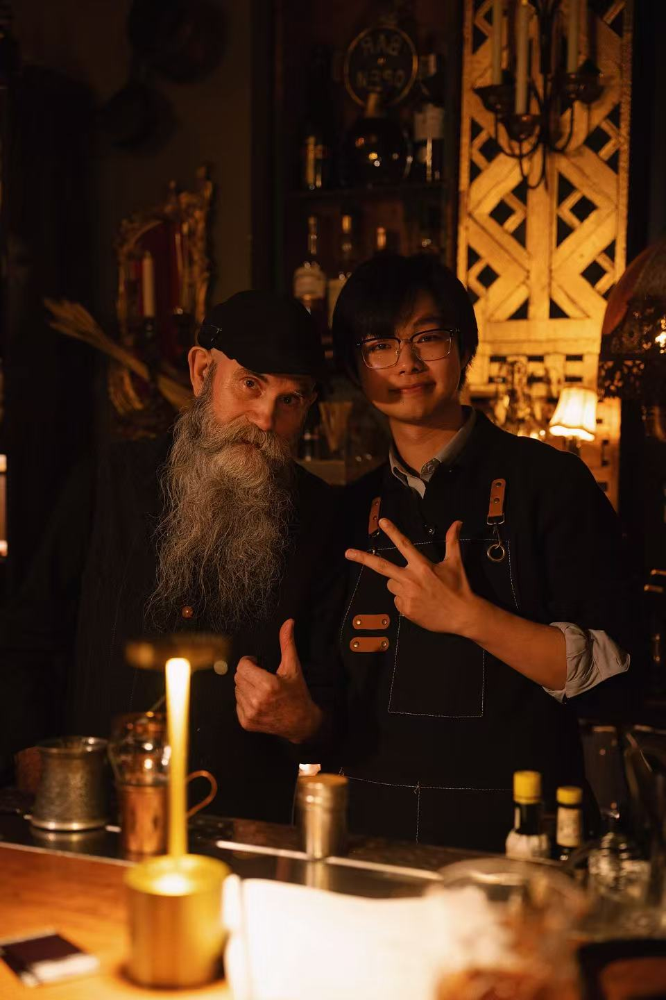

I am a PhD student in the Department of Electrical and Computer Engineering, Villanova University, advised by Prof. Xun Jiao. My current research interests lie in Machine Learning System, Robust AI, Efficient AI and Bio-inspired Computing.
I am a PhD student in the Department of Electrical and Computer Engineering, Villanova University, advised by Prof. Xun Jiao. My current research interests lie in Machine Learning System, Robust AI, Efficient AI and Bio-inspired Computing. Overall research focuses on developing high-performant, energy-efficient, and robust-and-reliable AI/ML systems, using a cross-layer full-stack approach spanning hardware, software, and algorithm. I got my bachelor's degree from the School of Computer Science at Central China Normal University. During my undergraduate studies, I joined the Intelligent Robot Laboratory and, under the guidance of Prof. Xi Peng, engaged in projects and research related to embodied intelligence, human-computer interaction, and computer vision. In addition, I joined the SmartSystems Laboratory at the University of Florida. Under the guidance of Prof. Christophe Bobda, I conducted research on intelligent embedded systems, intelligent sensing, and robotics technology. The focus was on runtime optimization, researching the design and runtime operation of high-performance adaptive architectures, and applying it to fields such as image processing, embedded optimization, security and control.
In my opinion, during the doctoral journey and perhaps in the rest of one's life, it is necessary to have a lasting inner self-motivation, to maintain curiosity, awe and respect for all people and things, whether understood or not, without losing rational thinking or emotional observation. This is not only about scientific research, but more importantly, about life. Therefore, beyond scientific research, I also try to keep myself perceiving and exploring life: to experience different lifestyles and get to know different people; Taste and document various foods (exploring nearly fifty restaurants in New York one after another); Obtained the bartender certificate in New York. Read books of different themes; Record the moments along the way with a camera during the trip. Pick up the guitar that has been forgotten for many years again; Even at one point, he tried to use tarot cards to peek into some unknowns - although it still seems absurd now...
We build AI systems that automate industrial Testing, Inspection and Certification (TIC) workflows by interpreting global standards and generating compliant reports.
Led coordination and testing support for autonomous driving R&D projects at Momenta, contributing to 3,000+ miles of real-world highway testing and improving requirement alignment between algorithm teams and external clients.
2023🥈 Silver Medal — Multi-Objective Recommender System Competition, Kaggle · top4%, 2587 teams🥈 银牌 — 多目标推荐系统竞赛，Kaggle · top4%, 2587 teams
2023🥈 2nd Prize — 16th China College Students Computer Design Competition · national level🥈 二等奖 — 第十六届中国大学生计算机设计大赛 · 国家级
2022🥇 1st Prize — 2022 China Robot Competition & RoboCup China Open (dance robot) · national level🥇 一等奖 — 2022中国机器人大赛暨机器人世界杯中国公开赛（舞蹈机器人） · 国家级
2022🥈 2nd Prize — 2022 China Robot Competition & RoboCup China Open (creative robot) · national level🥈 二等奖 — 2022中国机器人大赛暨机器人世界杯中国公开赛（创新机器人） · 国家级
Projects项目
📊
Agriculture AI · 2024
农业人工智能 · 2024
Optimal Decision-Making in Water, Land and Food Nexus based on Machine Learning
基于机器学习的水、土地和食物关系的最优决策
🤖
National Innovation and Entrepreneurship Training Program for College Students · 2023
国家大学生创新创业训练计划 · 2024
Intelligent Biped Humanoid Robot Based on Jetson Nano
基于Jetson Nano的智能双足人型机器人
🤖
National Innovation and Entrepreneurship Training Program for College Students · 2023
国家大学生创新创业训练计划 · 2023
Intelligent Quadruped Robot Based on SLAM Map Planning and Ultra-Wide Band Technique
基于SLAM地图规划和超宽带技术的智能四足机器人
🛠
Intelligent Transportation · 2022
智慧交通 · 2022
Human phone usage recognition based on OpenPose
基于OpenPose的行人手机使用识别
Work Experience
工作经历
Technical Partner & Senior EngineerCurrent
技术合伙人 & 高级工程师 进行中
Lagram Technologies
凌革科技
2025 — Present
20245 — 至今
Startup创业AI / MLFull-Stack全栈
Engineers in Testing, Inspection and Certification (TIC) companies must manually interpret thousands of regulatory clauses and generate complex compliance reports, a process that is slow, expensive, and error-prone.
Our system uses AI to understand regulatory standards, retrieve relevant clauses, and automatically generate structured compliance reports with traceable reasoning. This reduces report preparation from weeks to minutes.
We are currently deploying the system with two international testing organizations (Intertek, DEKRA) and iterating the product with real industrial users at an early commercial stage.
Key achievement — Reached early commercial stage and deployed our system with two international Testing, Inspection and Certification (TIC) organizations, validating the product in real industrial compliance workflows.
Technical highlight — Built an AI-driven compliance reasoning system combining hybrid document retrieval, regulatory knowledge graphs, and structured report generation with traceable evidence and confidence scoring.
Technical infrastructure — Developed a standard-agnostic architecture that decouples regulatory clauses from workflows, enabling rapid adaptation to different national standards and product categories.
Technical capability — Implemented hybrid semantic retrieval and context compression techniques to efficiently search thousands of pages of regulatory documents in real time.
Business highlight — Working with leading TIC laboratories and industry experts to deploy automation tools for compliance reporting in global certification markets.
商业亮点 — 与头部检测实验室及行业专家合作，在全球检测认证市场中部署自动化合规报表系统。
Project Product Manager Intern
项目产品经理实习生
Momenta (Autonomous Driving Company)
Momenta（自动驾驶公司）
Spring 2024
2024年春
Internship实习PythonMachine Learning机器学习
Supported end-to-end project management for autonomous driving R&D projects, tracking milestones, timelines, and cross-functional resources across algorithm, software, and testing teams.
支持自动驾驶研发项目的端到端项目管理，跟踪里程碑、时间表和跨算法、软件和测试团队的跨职能资源
Participated in real-world autonomous driving road tests on elevated highways in Shanghai, accumulating 3,000+ miles of on-road testing under real traffic conditions.
参与上海高架公路的实际自动驾驶道路测试，累计在真实路况下的道路测试里程超过3000英里。
Assisted in product requirement definition, issue analysis from testing, and technical documentation to facilitate efficient development and delivery.
协助产品需求定义、测试问题分析和技术文档，以促进有效的开发和交付。
Collaborated with product and engineering teams to translate business and customer needs into actionable technical and product requirements. Acted as a liaison between algorithm teams and external clients, aligning technical details, clarifying requirements, and supporting solution delivery.
I study tarot as a symbolic system — a deck of 78 archetypal images that map human experience. Click any card to read my notes on its symbolism and meaning.
Grandmother's marinade, refined over years. Overnight fermentation and high-heat caramelization.
外婆秘方，经年改良。隔夜腌制与高温焦糖化是关键。
🍜
Sichuan · Noodles
川味 · 面食
Dan Dan Noodles
担担面
Homemade chili oil, ya cai, ground pork. Mouth-numbingly authentic.
自制辣椒油、芽菜、猪肉末。正宗麻辣，欲罢不能。
🍲
Chinese · Braised
中式 · 红烧
Red-Braised Pork Belly
红烧肉
Three hours of slow simmering. Chairman Mao's alleged favorite.
慢火细炖三小时，人间至味。
🐟
French · Main
法式 · 主菜
Sole Meunière
黄油煎鳎鱼
Simple, elegant. The dish that made Julia Child fall in love with French cooking.
简单、优雅，让朱莉娅爱上法餐的料理。
🍰
Fusion · Dessert
创意 · 甜点
Matcha Basque Cheesecake
抹茶巴斯克芝士蛋糕
Bitter matcha cuts through rich cream cheese. The burnt top is the point.
抹茶苦涩平衡芝士浓郁，烤焦表面是精髓。
🫕
Japanese · Soup
日式 · 汤品
Tonkotsu Ramen (from scratch)
豚骨拉面（从零开始）
12-hour bone broth, chashu, marinated eggs, homemade tare. Worth every minute.
12小时骨汤、叉烧、溏心蛋、自制酱汁。
Behind the Bar
我的吧台
Cocktail Recipes
鸡尾酒配方

Alcohol, in its own way, offers a brief refuge—softening the edges of worry and easing moments of quiet unrest, even if only temporarily. Yet spirits on their own can be harsh and uninviting, which first led me to explore the craft of bartending on my own. What began as curiosity soon became commitment: I enrolled in the New York Bartending School, where I trained under Bryan Evans and earned my certification. Along the way, I developed an appreciation for a wide spectrum of spirits—from whiskey and tequila to brandy and rum—as well as wines, including red, white, and champagne. More importantly, I learned the structure and balance behind classic and modern cocktails, experimenting, refining, and ultimately creating drinks that transform intensity into harmony.
Gin and dry vermouth, stirred cold and served colder. A civilized drink.
金酒与干苦艾酒，冰镇搅拌，更冷上桌。文明人的饮品。
🍸
Prohibition Era · Shaken
禁酒令时代 · 摇制
Last Word
最后一语
Equal parts gin, green Chartreuse, maraschino, lime. A forgotten classic, perfectly balanced.
金酒、绿色查特酒、黑樱桃利口酒、青柠各等份。被遗忘的经典，完美平衡。
🌙
Original · Shaken
原创 · 摇制
See You Tomorrow
明日再见
My signature farewell drink. Made for the last round of the night.
我的招牌告别之饮，为今晚最后一杯而生。
Marginalia
书边笔记
Reading Notes
读书笔记
I study tarot as a symbolic system — a deck of 78 archetypal images that map human experience. Click any card to read my notes on its symbolism and meaning.
What moved you? A key insight that changed how you see the world...
什么打动了你？改变世界观的关键洞见...
Read full notes →
查看完整笔记 →
📗
Non-Fiction · 2024
非虚构 · 2024
Another Great Book — Author Name
《另一本好书》— 作者
Publisher, Year
出版社，年份
★★★★☆
Key arguments and whether you agreed. How it applies to your own work...
核心论点与个人观点，与自身研究的关联...
Read full notes →
查看完整笔记 →
📘
Science · 2023
科学 · 2023
Essential Science Reading — Author
《必读科学著作》— 作者
Publisher, Year
出版社，年份
★★★★★
Changed how I approach research. The chapter on X was illuminating...
改变了我做研究的方式，关于X的章节尤为深刻...
Read full notes →
查看完整笔记 →
📕
History · 2023
历史 · 2023
A Sweeping History — Author
《一部宏大历史》— 作者
Publisher, Year
出版社，年份
★★★★☆
Meticulously researched. The present is always stranger than we think...
严谨翔实，现在总比我们以为的更奇异...
Read full notes →
查看完整笔记 →
📙
Philosophy · 2023
哲学 · 2023
A Philosophy Classic — Author
《哲学经典》— 作者
Publisher, Year
出版社，年份
★★★★★
Some books aren't meant to be consumed — they're meant to be lived alongside...
有些书不是用来读完的，而是用来相伴的...
Read full notes →
查看完整笔记 →
📒
Food Writing · 2022
美食写作 · 2022
A Food Memoir — Author
《美食回忆录》— 作者
Publisher, Year
出版社，年份
★★★★★
The best food writing is about memory, identity, and love. Called my mother immediately after...
最好的美食写作写的是记忆、身份与爱。读完立刻打电话给了妈妈...
Read full notes →
查看完整笔记 →
Visual Notes
视觉笔记
Photography
摄影
I study tarot as a symbolic system — a deck of 78 archetypal images that map human experience. Click any card to read my notes on its symbolism and meaning.
I study tarot as a symbolic system — a deck of 78 archetypal images that map human experience. Click any card to read my notes on its symbolism and meaning.